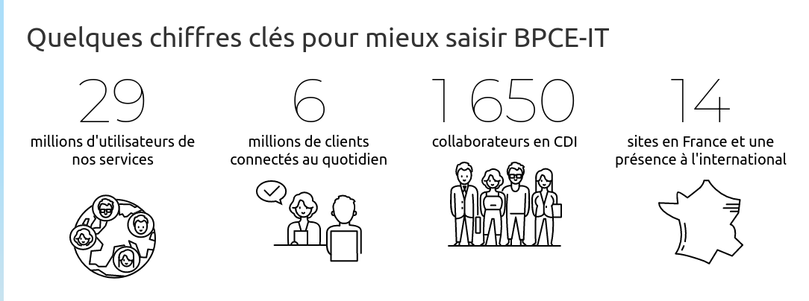

MON STAGE
Présentation de l'entreprise
J'ai réalisé un stage de 11 semaines, dans l'entreprise BPCE-IT à Dijon. BPCE Infogérance & Technologies est une entreprise du groupe BPCE, 2ème groupe bancaire en France qui est spécialisée dans le secteur bancaire et assurantiel. Créée en 2015, BPCE Infogérance et Technologies est un Groupement d’Intérêt Économique (GIE) dont la mission principale est de consolider les infrastructures informatiques du Groupe BPCE et de mutualiser les achats afin d’optimiser les coûts et améliorer la qualité de service.
Présentation du sujet
En tant que stagiaire, j'ai contribué au développement de templates répondant aux spécificités demandées par l'équipe. L'objectif principal de cette mission était d'automatiser les processus de livraison sur le mainframe.
Compétences mise en pratique durant le stage
Compétence 5
- Comprendre et analyser les attentes et les exigences des clients et des utilisateurs afin de définir clairement leurs besoins métiers. Cela implique une communication efficace avec les différentes parties prenantes et l'utilisation d'outils de gestion de projet
- Mettre en place des processus pour suivre l'avancement du projet en fonction des besoins identifiés. Cela inclut la formalisation des besoins, l'évaluation de la faisabilité et la mise en œuvre de méthodes adaptées pour garantir la réussite du projet.
Compétence 6
- Comprendre et analyser les différentes aptitudes nécessaires pour travailler efficacement en équipe informatique. Cela implique de connaître les différents rôles et responsabilités au sein d'une équipe pluridisciplinaire et de développer des compétences interpersonnelles pour une collaboration réussie.
- Comprendre son rôle spécifique et ses missions au sein d'une équipe informatique, tout en tenant compte de la diversité et de l'importance de chaque membre. Cela inclut l'intégration dans une équipe, la mobilisation des compétences interpersonnelles et la communication efficace de son activité professionnelle.
SCROLL
Contact
E-mail
manon.grandmougin.prestataire@bpce-it.fr